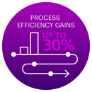
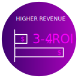

Cost Savings
A brief description goes here and can be about ten to twelve words
Increased Compliance
A brief description goes here and can be about ten to twelve words
Customer Satisfaction Boost
A brief description goes here and can be about ten to twelve words
Quality improvements
A brief description goes here and can be about ten to twelve words
Productivity & Efficiency Gains
A brief description goes here and can be about ten to twelve words
Procurement Spend Reduction
A brief description goes here and can be about ten to twelve words
Reduced Inventory
A brief description goes here and can be about ten to twelve words
Stakeholder Experience Enhanced
A brief description goes here and can be about ten to twelve words
Highest Employee Satisfaction
A brief description goes here and can be about ten to twelve words
1st Quartile Customer Experience
A brief description goes here and can be about ten to twelve words
Enhanced Stakeholder Outcomes
A brief description goes here and can be about ten to twelve words



Human + Machine Talent
Diverse Data
Work Orchestration
Insights + Intelligence
Accenture SynOps accelerates the journey to digital, data-driven, intelligent operations.
Learn More